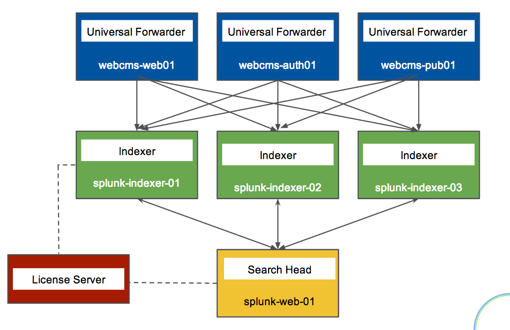
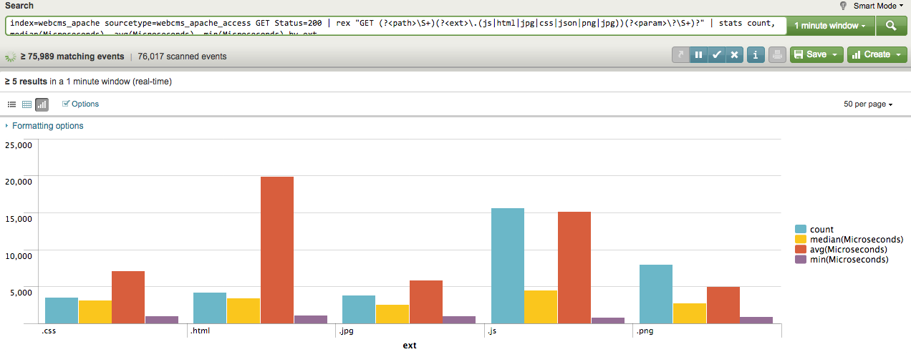

Monitoring FTW
Brian StreetAgenda
- What is Monitoring?
Tools
- Unix text tools
- AppDynamics (instrumented java: cross app/aggregate)
- Splunk (unified log scraping)
Basic Splunk
- Concepts
- Topology
- Search Interface
- Search fields
- Transforming Data
- Visualizations (events vs tables/charts/etc)
- recommended optimizations
Advanced Splunk
- Alerts
- Dashboards
- Splunk in Practice
Introduction
Full Stack Developer on http://www.timewarnercable.com (Alexa Top 3000 and climbing)
- Residential Phase 1: insource main site to new CMS & design
- Contributed to push for RWD (Responsive Web Design - same content, multiple devices)
- EBF Buyflow: insource existing online ordering
- ABF Buyflow: extend online orders to potential new users
- Applying lessons from previous projects to new ones
- flexible engineer with a passion for automation
- other tech interests: ETL, Databases, (Automated) QA, and Motion Control/robotics
What is Monitoring
| monitor (verb) "to watch, observe, listen to or check (something) for a special purpose over a period of time" |
- Is it [app, server, …] working?
- Automate the boring parts of your jobs away
- Is it possible to catch __ ahead of time?
Business Buzzwords
- "machine data"
- "operational intelligence"
| MIP (Monitoring Implementation Plan) |
Where to start: "Get centralized logging."
- Pay attention to where your constraints tend to be
- Only alert on actionable items (to prevent alert fatigue)
Developer Perspective
- Look for expected events (or their absense)
- Exploring for unexpected events
Analyze "shapes" of events
- grouping vs even distribution
- frequent vs rare
- Correlations with other events
- Sanity check external metrics & analytics
Prioritize code effort
- How is code behaving?
- How is code performing?
Tools in use: Unix text tools
- ie
grep,sed,awk - very capable, but require understanding, effort
- better at single files, instances
Tools in use: AppDynamics
- "monitoring by instrumented java"
- Business Transactions
- Aggregate Thresholds
- Excels at application boundaries (host & JVM metrics, remote calls)
- Automatic Timing (of remote calls)
- Deeper inspection of sampled calls (randomly or triggered by condition)
-javaagent:…/javaagent.jar→ hosted AppDynamics server- warning: Adobe Flash interface
Tools in use: Splunk
- "unified log scraping" (my words)
- any log file, any platform
- fowarder(s) → indexer(s) → search head
- TWC has licenses & multiple instances
Basic Splunk: Topology
forwarder → indexer → search head
- forwarder streams (log) files to (central) indexers
indexer indexes data for optimized searching, especially over time
- (I/O intensive)
- manage permissions based on index
- generally striped not mirrored
search head Provides UI
- Runs queries against indexers.
- Data manipulations happen at search time (leaving indexed events alone)
- Anticipate multiple forwarders & indexers; Can have separate search heads.
- License Server authorizes indexers, search heads
- Can run locally! Splunk Downloads

Basic Splunk Concepts
- processing: index-time vs search-time (translate events only as needed)
- events: single entry of data
- fields: name/value pairs extracted from event data
- tags: aliases to field values
- eventtypes
- reports/dashboards
- apps
- permissions/users/roles
- transactions: group related events together for easier analysis
Basic Splunk: Interface
- Search Box: the query
- Time Selector: time period to execute over (all time; last 2 weeks/1 week/day/hour/15 minutes; real-time windows)
- Events: events matching the query; often truncated but expandable. Matched fields are highlighted
- Query Controls: manage slow queries, save queries/results, create alerts/dashboards/etc
- Field locator: interact with extracted fields from events (defined per log)
Splunk Search: fields
A query can be as simple as a word or ID to search for. However, to help efficiency and find events pertinent to your application:
Application Fields
index=specify the indexer queried (else hits all indexers - not polite)sourceType=alias for a type of log filehost=which machine the event belonged tosource=path to the log file
(Specifying 1+ of these fields will help efficiency, accuracy)
Arbitrary Fields
Admins define other fields per type of log file
- highly structured logs (such as access logs with timestamps, IP, URL, …)
- unstructured logs (such as Java error logs) have less fields
Splunk Queries: Transforming Data
Search terms have implicit AND between them.
User can change the join logic (such as OR and grouping terms.)
Terms can include quoted literal terms "this is my error"
Search commands can be piped together, especially for transformations.
- calculations:
eval velocity=distance/time - RegEx extraction:
rex field=_raw "From: (?<from>.) To: (?<to>.)" - substitutions:
lookup usertogroup user output group formatted data extraction:
- XML Key-Value:
xmlkvextracts keys as new fields - Structured Path:
spath [output=newField] path=commits.author.name - XPath:
xpath outfield=name "//bar/@name"
- XML Key-Value:
- other text-based extractions (
split,substr, …) - stats functions (
count,avg,median,max/min, …)
| while typing in a search, the UI will attempt to display relavant hints |
Splunk Visualizations: Tables
Sometimes you want summary data instead of the raw events or fields.
Tables
index=webcms_cq sourcetype=webcms_pub_error Exception | rex "(?<exc>\S+Exception):" | table exc host source- search for Exception, extract exception name into "exc", return a table of 3 columns
index=webcms_cq sourcetype=webcms_pub_error Exception | rex "(?<exc>\S+Exception):" | top exc [by host]- Extract Exception names and show counts, percents by default (possible to hide the extra columns)
- the
by hostinserts field "host" for finer-grained data
Splunk Visualizations: Charts
Optimizing Searches
(Based on Splunk’s Quick Reference Guide)
- make searches as specific as possible (eg
fatal_error, not*error*) - limit time range (eg
-1hinstead of-1w) - filter out unneeded fields asap
- filter out results before calculations
- prefer "Advanced Charting" view over "Flashtimeline" (which calculates timelines)
- in Flashtimeline, turn off "Discover Fields" when not needed
- use summary indexes to pre-calculate commonly used values
- make disk I/O the fastest available
Advanced Splunk: Alerts
Alert from Search (3 step wizard):
Alert from Manager (Searches & Reports.Manage Searches & Reports, filter & select alert):
- search, time range
- description
- schedule (cron vs basic: every week, day, n hours, m minutes)
- Condition: (always, \# events, \# hosts, \# sources, custom condition)
- Alert mode: (per search vs per result)
- Throttling, Expiration, Severity
- Actions: email (subject, comma-separated addresses)
- Results: in email (inline, CSV, PDF)
- RSS feed
- trigger script
- …
Advanced Splunk: Dashboards
(if permissions) Dashboards & Views.{dashboard name}, Edit:on
panels
- search with optional visualization/charting
edit search:
- search string or saved search
- time range
- edit visualization
- delete panel
- can be stacked horizontally, but changes to vertical stack in PDFs
- edit XML (handy for editing dashboard as a whole or "dumping" the dashboard)
- edit permissions
| if dashboard is scheduled (ie email distribution), then ensure each search completes in less than a minute. |
Splunk in Practice: Real-time traffic
- "Load Balancer View" (used during deploys to watch traffic across all nodes)
- Webcms Real Time Traffic
Splunk in Practice: Top CQ5 Exceptions
- Exploration query: what is happening
- Can focus on most frequent exceptions
- or focus on rare, but "shouldn’t happen" ones
- Killed exception #1:
IllegalStateException: page needs a session(was up to 85% of old exceptions) - JUN-28 emailed exceptions
- SEP-06 emailed exceptions
Splunk in Practice: Checkout Error Dashboard
- scheduled daily email to our business groups
- iterated with business, including breaking out certain errors & time-frame
- Webcms Checkout - last 24 hours
Splunk in Practice: live demo
narrow down time-range:
index=webcms_apache sourcetype=webcms_apache_access GET | timechart median(Microseconds)
Specific request types (html vs static css or images)
index=webcms_apache sourcetype=webcms_apache_access GET Status=200 | rex "GET (?<path>\S+)(?<ext>\.\w{2,4})(?<param>\?\S+)?" | table Microseconds path ext param

Timechart average vs medians
(Apache) index=webcms_apache sourcetype=webcms_apache_access GET html Status=200 | timechart median(Microseconds), avg(Microseconds)
(publish) sourcetype=webcms_pub_access GET html 200 | rex "HTTP.1.\d\" (?<code>\d{3}) (?<time>\d+)" | timechart median(time), avg(time)
Conclusion:
Recently, we have put a focus on understanding sporadic sluggish responses. We know some requests still respond quickly, but the worst-case rapidly gets worse. Our latest theory is either bulk activation/replication or dispatcher flushes (more pages than needed).
Thank You
Thank you for your time!
/